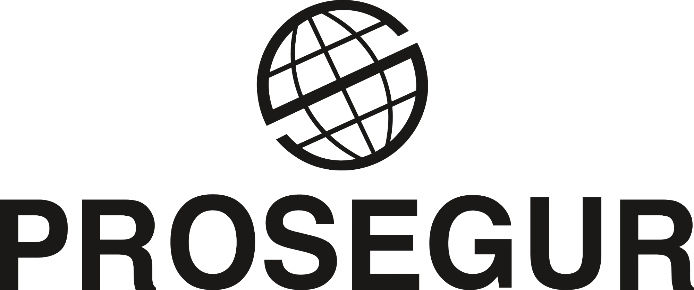
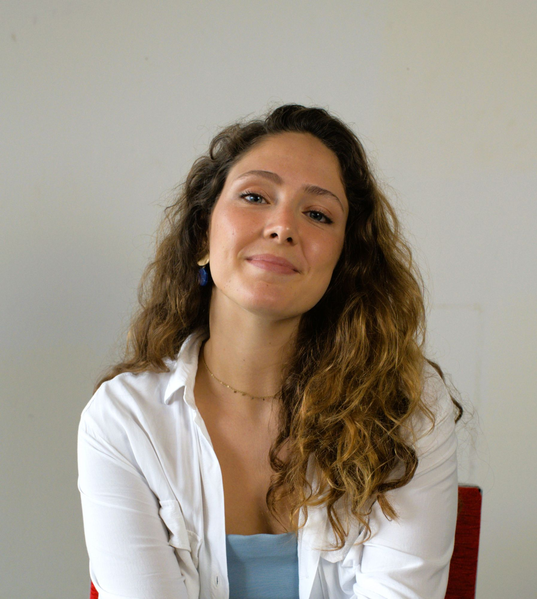

Colaboraciones



Ingeniería de Sistemas de Telecomunicación, Sonido e Imagen y Comunicación Audiovisual.
Doble titulación.

Experiencia en edición y montaje, producción, dirección de campañas publicitarias y coordinación de proyectos de impacto social.
Raval Producciones, cortometrajes universitarios y talleres en Panamá.
Ver proyectos →Colaboraciones con las ONGs Inspiring Girls Panamá y TECHO.
Ver proyectos →Encargos de edición y montaje para marcas e instituciones.
Ver proyectos →Trayectoria completa, formación y habilidades técnicas.
Ver CV →

Siempre abierta a nuevos proyectos.